Movements¶
Creating a movement from scratch¶
In Choregraphe, it is very easy to create simple movements in no time.
| Step | Action | Further help |
|---|---|---|
| Drag and drop the Template > Animation box onto the Flow diagram Panel. | ||
Double-click the box to enter it. An empty Timeline is displayed. |
||
| Choose a starting position. | To quickly set the robot in a position, you can click on a predefined position in Pose library panel. | |
| Right-click on the Frame 5 of the the Motion layer. | Having a keyframe at index 1 is not advised: it would mean that the robot, from an unknown position when entering the box, should go to this position in no time and the keyframe would probably be ignored. | |
Click on one of the robot limbs to display the Motion widget. Note Whenever there is a current frame cursor (the blue line) on the Timeline, the motion editing is on. |
||
| In the Motion widget, you can add some joint values of the selected limb in the current keyframe, moving a limb will automatically add the joint value to the selected keyframe. |
Creating a movement with a real NAO robot to define the joints values¶
 Cannot be tested on a simulated robot.
Cannot be tested on a simulated robot.
Warning
Head motors have to be un-enslaved, see page about enslave motor
This tutorial will explain how to use a real NAO robot to create a movement.
We will see how to define joints values by moving a real NAO robot.
Saving the head joints values using Motion widget¶
When you change the real NAO position, you can see that the virtual 3D NAO changes position too. Try to raise NAO’s arm for example.
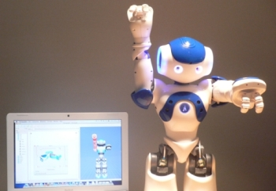Wouldn’t it be nice to use this feature to create position keyframes on a motion Timeline?
Now, let’s say we want NAO to move its head up in the first keyframe and to keep its arms down:
Click on the first keyframe
Click on the head of the virtual 3D NAO to open the Motion widget.
Move the real NAO robot head to the position you want.
Click on the two record buttons of the Motion widget as in the following picture:
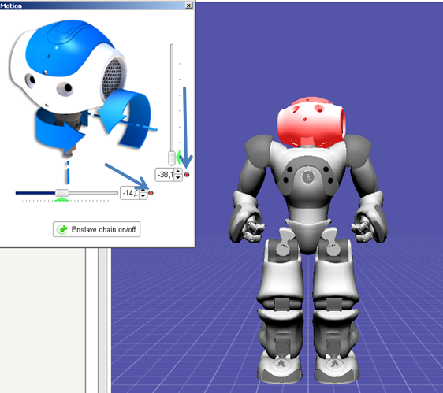The head joints values have been saved in the first keyframe.
Saving the arms joints values using the “Store joints in keyframe” options¶
Move the real NAO robot arms to put them down.
Click on Enslave all on/off in the Motion widget.
The robot doesn’t move.
Right-click on the first keyframe and select the Store joints in keyframe option.
Note
This feature allows you to save the joints values of NAO: the joints of the whole body, the head, the arms or the legs.
As we want to save the joints values of the arms, click on Arms.
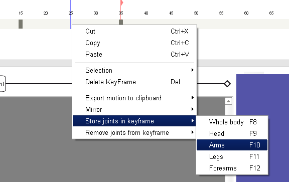The joints values of the arms have been saved in the first keyframe.
Raising the arms in a second keyframe¶
Left click the motion Timeline to change the current edition frame (the blue line).
A second keyframe is displayed on the motion Timeline.
Move the real NAO robot arms to the position you want.
Click on Enslave all on/off in the Motion widget.
The robot doesn’t move.
Right click on the second keyframe and select Store joints in keyframe > Arms.
The joints values of the arms have been saved in the second keyframe.
Thanks to the Store joints in keyframe option, we were able to save the values of 8 joints (4 joints per arm) in a keyframe in only a single click.
Note
When you right-click on a keyframe, the Remove joints from keyframe option allows you to easily remove the joints values that have been saved in a keyframe. You can choose to remove the joints values of the whole body, or only the values of the head, arms, legs or forearms.
Creating a movement using the recording mode¶
Cannot be tested on a simulated robot.
Warning
Head motors have to be un-enslaved, see page about enslave motor
Now we are going to see the new recording mode, that allows you to record joints, without having to jump between the robot and the mouse!
Opening the recording mode¶
Drag and drop the Templates > Animation box onto your diagram.
Double click on it to see the Timeline.
Open the Timeline editor by clicking on the following button:
Now activate the recording mode using the menu bar (Record > Switch to recording mode), or the toolbar by clicking on the following button:
You should see two new columns in the tree on the left panel.
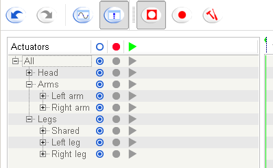You are now ready to record your first movement.
Recording movement¶
Let’s create a new dance with arms movements.
In order to select the joints to record, click on the record column in front of arms, the window should look like that:
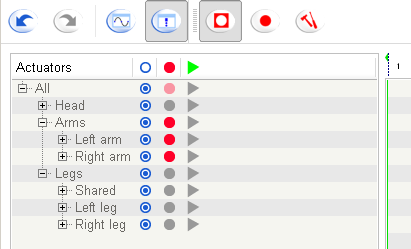Start the record using the menu bar (Record > start) or the toolbar by clicking on the following button:

Move the robot arms as you want and stop the recording whenever you want by clicking on the button:

You should obtain a Timeline as follows:
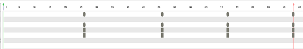
Now, let’s move the head accordingly to our nice arms movement.
Deselect the “record” column of the arms.
Check the “replay” column of the arms.
Check the “record” column of the head.
The window should look like that:

Enslave the arms.
Note
Enslave the arms is done in order to replay the arms movements during the recording of any movement of the head.
Now, let’s change the recording mode:
Open the motion recorder settings using the menu bar (Record > Settings) or by clicking on the following button:

Choose the interactive mode using bumpers.
The robot is going to listen to its bumpers. A small panel should explain how it works.
Editing the recording¶
Now, you may want to edit the recording, and customize your movement.
Open the curves mode by clicking on the following button in the tool bar:
The animation is now displayed with curves that represents the evolution of joints values for each keyframes.
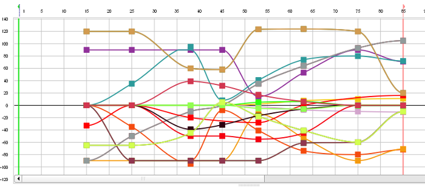Before doing any edition, you can use the “simplify” method, that will remove useless keys from selection:
First, select a range of keyframes.

Click on Simplify button and try the default value:
You will see that non relevant points are now transparent: they will be deleted if you accept the simplification.
Click on Close.
You will see that the result is a bit less frightening! At least, all the double keys have been removed, which make the whole movement easier to read/modify.
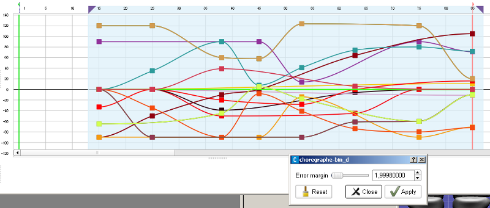Now, you are ready to edit the recording using all the Timeline tools!
Creating a movement using animation mode¶
Cannot be tested on a simulated robot.
This tutorial will show you how to create a movement using the animation mode.
Starting from the Init pose of the pose library, we will animate NAO in order to put it in the position of the famous sculpture called The thinker by Rodin.
This movement will include legs, arms and head movements.
First, if you want more information about the animation mode see How to use the animation mode section.
If you feel ready to bring your NAO to life:
Enslave your NAO
To know how to do it, see How to enslave section.
Put your robot into the Init position using the pose library.
Drag and drop the Template > Animation box.
This box will store all the keyframes of the movement.
Double click on the box in order to display the Timeline.
To edit the Timeline, click on the following button:
The following window is displayed:
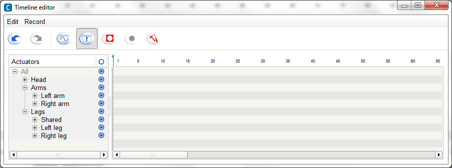Now we will select the record mode, click on the following tools button:
Select the Interactive using the chest button mode, this mode will record NAO’s position each time you press the chest button or say Store position.
Click on Ok.
Click on the following button to switch to the recording mode:
In the actuators list click on the intersection of the record column and the All row to activate the record of all actuators.
The actuators list should look like that :
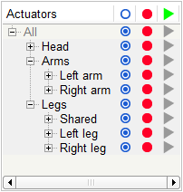Now you are ready to start the recording of the movement, click on the following button to start the record:
Don’t worry no joints values are recorded until you have pushed the chest button or said Store position to your robot, this is the particularity of the recording mode you have chosen.
Your robot in the Init pose should look like that:
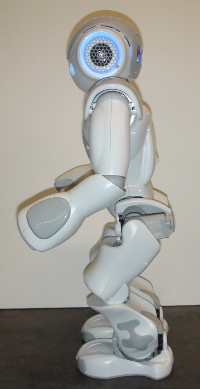We will decompose the movement into several peaces in order to make it really simple, we will start by the leg:
As you enslaved your robot before, all the joints are rigid, to move legs, you will have to un-enslave it first, hold your NAO by the chest to prevent it to fall down and push the two bumpers to un-enslave legs.
Lower the chest in order to flex legs, your robot should look like that:
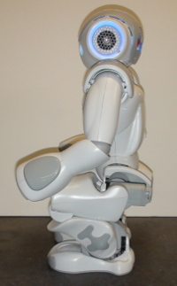Move the right foot forward and turn it a little on the right like in the following picture:
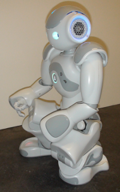Enslave the legs, press the chest button to record the position.
The next part of the movement will involve the arms and the head of the robot, put the left arm on the left knee.
Un-enslave the head and lower it until it is no longer possible, tilt the chest forward, raise the right hand to the head
Enslave the robot and verify if the position is stable, if it is, record the position if not tilt the chest backward until the position remains stable and store the position.
Your robot should look like that:
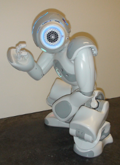The movement is finished congratulation!!!
To stop the record, click on the following stop record button:
You can see that all the keyframe recorded were added to the Timeline.
To perform the animation, exit the animation box and link it to the beginning of the root behavior.
Click on the following play button to start the animation.
You can now create outstanding movements very easily.